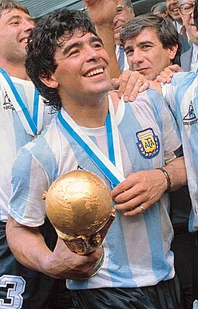

Diego Maradona es una de las máximas leyendas de la Selección Argentina y del fútbol mundial. Fue el gran protagonista de la consagración en el Mundial de 1986, donde alcanzó la gloria con actuaciones inolvidables. En ese torneo convirtió el histórico “Gol del Siglo” frente a Inglaterra, considerado uno de los mejores goles de todos los tiempos por su increíble recorrido y habilidad individual.
Partidos jugados: 30
Goles: 60